Gestione Soste – Agente Raccomandatario Marittimo
Il portale delle Smart Guide è uno spazio digitale che raccoglie risorse pratiche e aggiornate in un unico ambiente intuitivo. Strumenti chiari e organizzati per organizzarti e trovare subito ciò che ti serve.
01.
Valutazione di una sosta in bozza confermata
Panoramica sulle azioni disponibili per la valutazione di una sosta posta in stato "Bozza Pronta" da parte del collaboratore.
Punti di accesso per valutare l'attività
Di seguito i punti di accesso per valutare l'attività di una sosta in bozza confermata:
Lista attività dalla dashboard
È possibile visualizzare le proposte tramite le azioni disponibili per ciascuna attività presente nella dashboard nel tab "Aggiornamento soste".
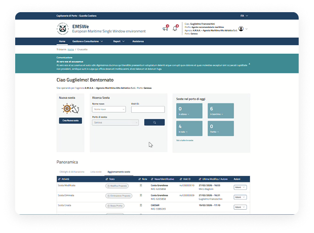
Notifiche
Attraverso la sezione delle notifiche è possibile accedere al dettaglio della sosta in stato "Bozza pronta", visualizzando le azioni disponibili.
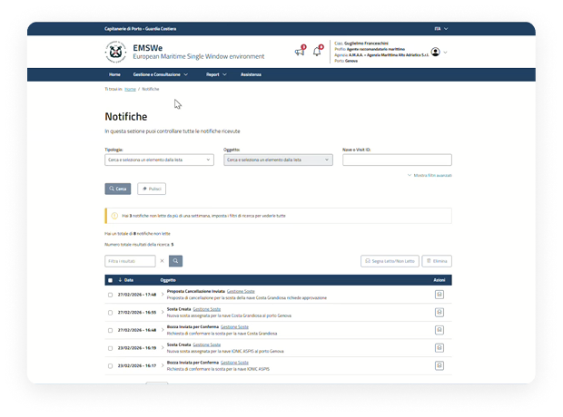
Ricerca dichiarazione
Nella ricerca sia nel tab "Lista soste" che nel tab "Aggiornamenti soste", sarà possibile visualizzare e accedere alla sosta in stato "Bozza pronta".
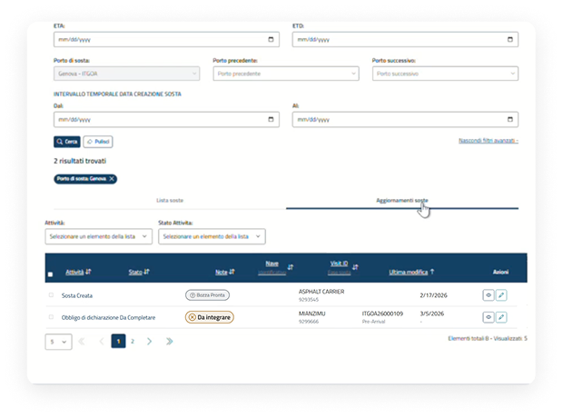
Valutazione di una sosta in bozza confermata
Azioni disponibili post "Conferma bozza"
Dopo che il collaboratore ha confermato la bozza, l'Agente avrà la possibilità di procedere con le seguenti azioni:
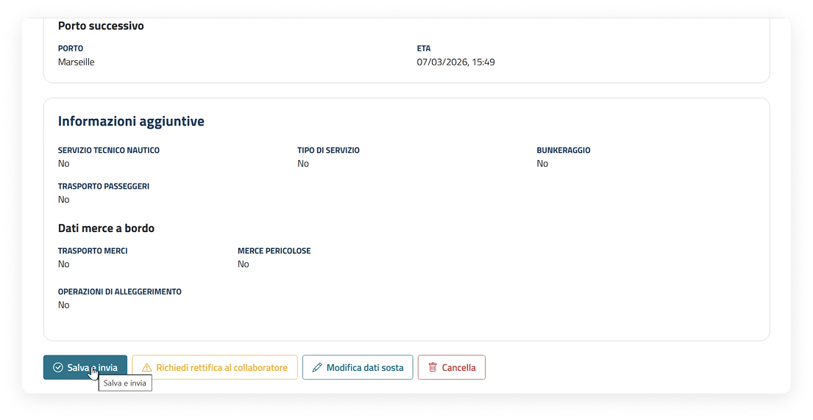
L'utente, dopo aver verificato i dati presenti nella sosta, può decidere di Salvarla e inviarla.
L'utente, dopo aver verificato i dati presenti nella sosta, può decidere se richiedere al collaboratore di rettificarla.
L'utente, dopo aver verificato i dati presenti nella sosta, può decidere se modificarla o eliminarla.
Valutazione di una sosta in bozza confermata
Passaggi per salvare e inviare una sosta
Dopo essere entrati nella pagina di dettaglio della sosta seguire i passaggi indicati per procedere con il salvataggio e l'invio:
Stato della sosta e avvio della modifica
All'interno del dettaglio la sosta è nello stato "Bozza pronta". Per salvare e inviare cliccare il pulsante "Salva e invia".
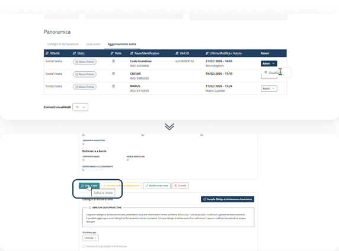
Finestra di conferma e successo
Il sistema mostra una finestra di conferma all'utente. Una volta cliccato "Salva e invia" viene comunicato l'avvenuto successo dell'azione.
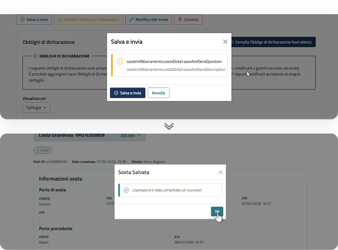
Dettaglio e cambio stato
Dopo aver inviato e salvato la sosta, all'interno del dettaglio lo stato passa in "Aperta" e verrà associato un visit ID.
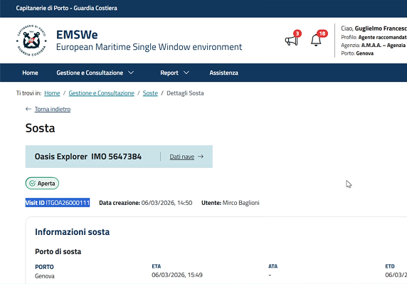
Valutazione di una sosta in bozza confermata
Passaggi per richiedere la rettifica
Dopo aver fatto l'accesso al dettaglio della sosta confermata in bozza, seguire tutti i passaggi indicati per richiedere la rettifica al collaboratore.
Richiedi rettifica a collaboratore
All'interno del dettaglio della sosta, è possibile richiedere la rettifica tramite il pulsante "Richiedi rettifica al collaboratore".
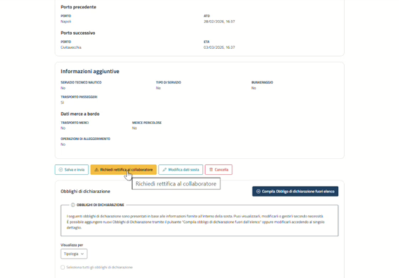
Inserimento della motivazione della rettifica
Il sistema mostra una finestra in cui l'utente deve obbligatoriamente indicare il motivo e confermare tramite l'apposito pulsante.
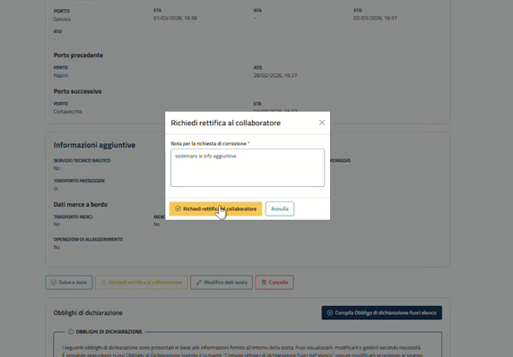
Dettaglio e cambio stato
Dopo aver richiesto la rettifica della sosta, all'interno del dettaglio della stessa lo stato passa in "Correzione richiesta".
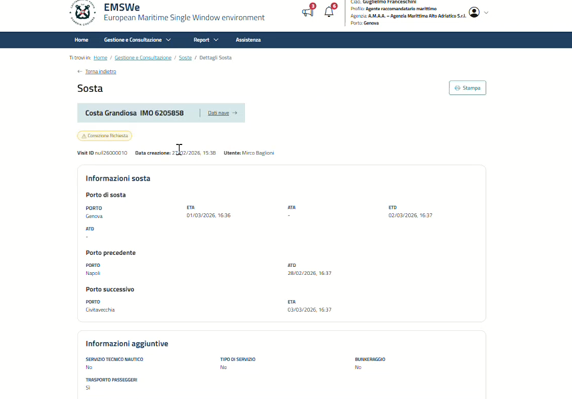
Valutazione di una sosta in bozza confermata
Passaggi per modificare una sosta
Dopo aver fatto l'accesso al dettaglio della sosta confermata in bozza, seguire tutti i passaggi indicati per modificare una sosta.
Azione di modifica
All'interno del dettaglio della sosta, è possibile modificare i dati della sosta tramite il pulsante "Modifica dati sosta".
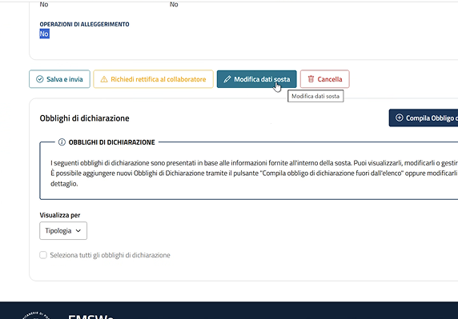
Modifica a step
Il processo di aggiornamento delle informazioni è a step guidati, dove è possibile modificare dati generali e informazioni aggiuntive.
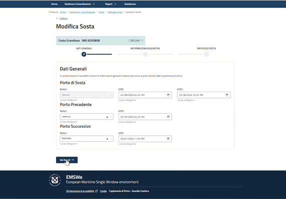
Dettaglio e salvataggio
Una volta completate le modifiche, è necessario salvare le informazioni cliccando il pulsante "Salva e invia".
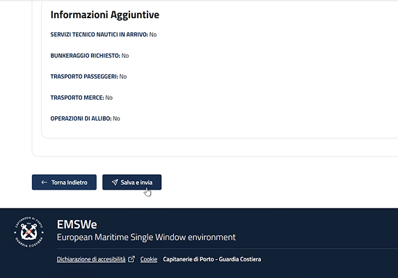
Valutazione di una sosta in bozza confermata
Passaggi per eliminare una sosta
Dopo aver fatto l'accesso al dettaglio della sosta confermata in bozza, seguire tutti i passaggi indicati per eliminare una sosta.
La sosta, una volta cancellata, non sarà più disponibile e i relativi Obblighi di Dichiarazione verranno posti in stato "Annullata".
CancellaCancella dal dettaglio della sosta
All'interno del dettaglio della sosta, è possibile cancellare la sosta tramite il pulsante "Cancella".
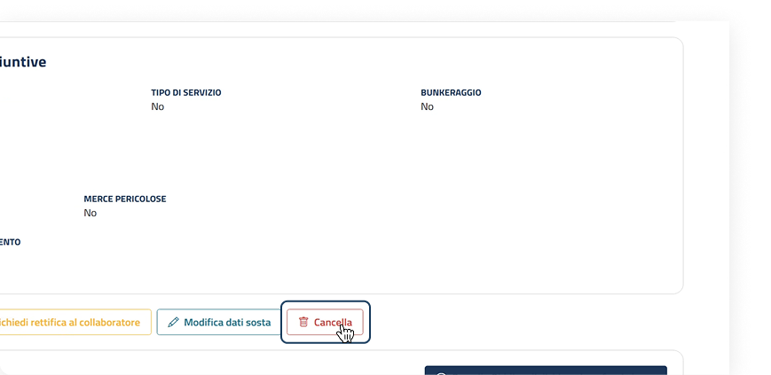
Finestra di conferma e giustificazione
Il sistema mostra una finestra di conferma che informa l'utente che l'eliminazione della sosta è irreversibile e che, una volta cancellata, non sarà più disponibile. Cliccare "Cancella sosta" per confermare.
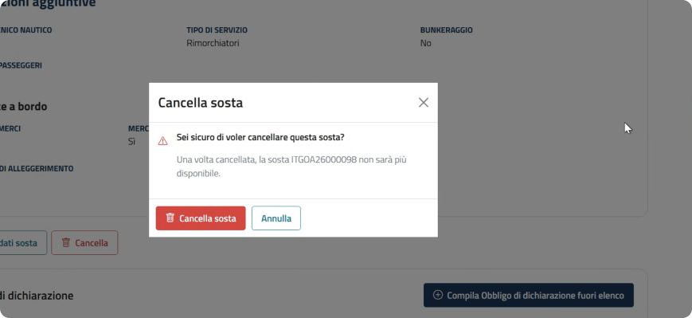
02.
Valutazione proposta di modifica
Di seguito una panoramica sulle azioni disponibili per la valutazione di una proposta di modifica di una sosta.
Punti di accesso per valutare le proposte di modifica di una sosta
Lista attività dalla dashboard
È possibile visualizzare le proposte tramite le azioni disponibili per ciascuna attività presente nella dashboard nel tab "Aggiornamento soste".
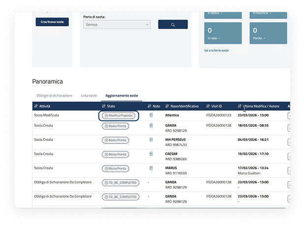
Notifiche
Attraverso la sezione delle notifiche è possibile visualizzare e accedere alla proposte di modifica della sosta.

Ricerca dichiarazione
Nella ricerca sia nel tab "Lista soste" che nel tab "Aggiornamenti soste", sarà possibile visualizzare e accedere alle proposte di modifica della sosta.
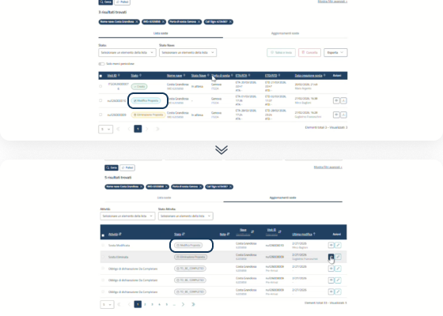
Valutazione proposta di modifica
Passaggi per valutare la proposta
Dopo che il collaboratore ha proposto la modifica, l'agente potrà valutare se accettare o rifiutare la proposta.
Dettaglio e conferma modifica
All'interno del dettaglio, confermare la proposta di modifica cliccando l'apposito pulsante "Visualizza proposta modifica".
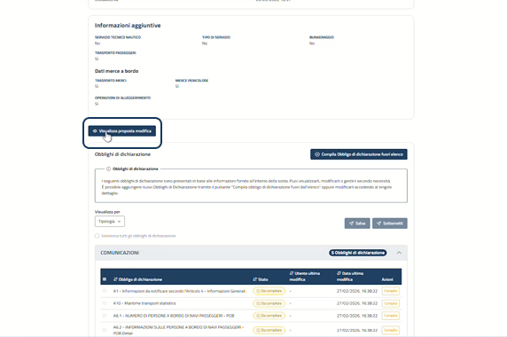
Motivazione e conferma
Il sistema mostra una finestra al cui interno sono evidenziate le modifiche apportate dal collaboratore; cliccare il tasto "Approva" per continuare.
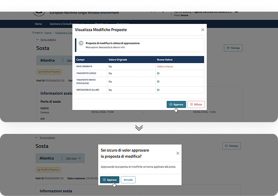
Stato e informazioni della modifica
Dopo aver approvato la proposta di modifica, all'interno del dettaglio la sosta assumerà lo stato passa in "Aperta" e verrà posto un focus sulle informazioni modificate.
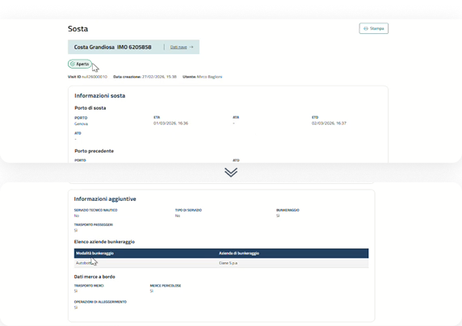
In caso di rifiuto della proposta di modifica, la sosta assumerà nuovamente lo stato creata e le modifiche proposte non saranno più visibili.
03.
Valutazione proposta eliminazione
Di seguito una panoramica sulle azioni disponibili per la valutazione di una proposta di eliminazione di una sosta.
Punti di accesso per valutare le proposte di eliminazione di una sosta
Lista attività dalla dashboard
È possibile visualizzare le proposte tramite le azioni disponibili per ciascuna attività presente nella dashboard nel tab "Aggiornamento soste".
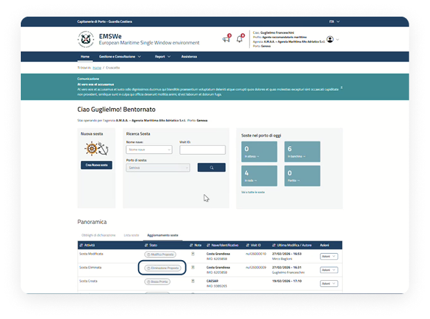
Notifiche
Attraverso la sezione delle notifiche è possibile visualizzare e accedere alla proposte di eliminazione di una sosta.
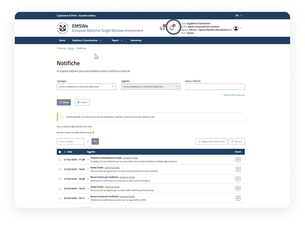
Ricerca dichiarazione
Nella ricerca sia nel tab "Lista soste" che nel tab "Aggiornamenti soste", sarà possibile visualizzare e accedere alle proposte di eliminazione di una sosta.
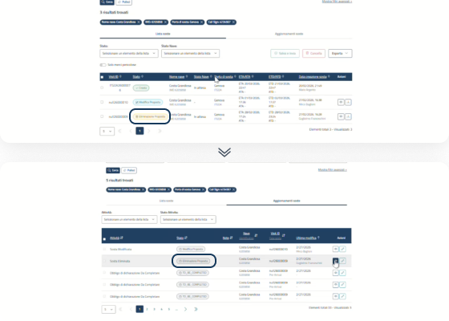
Proposta di Modifica o Eliminazione
Valutazione proposta di eliminazione
Dopo che il collaboratore ha proposto l'eliminazione della sosta, l'agente potrà valutare se accettare o rifiutare le proposte.
Dettaglio e accetta proposta eliminazione
All'interno del dettaglio, per confermare la proposta di eliminazione cliccare il pulsante "Accetta proposta eliminazione".
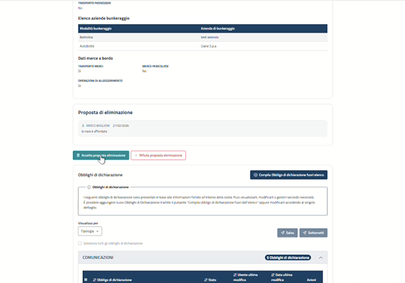
Finestra di successo
Il sistema mostra una finestra in cui informa l'Agente che l'operazione di eliminazione della sosta è completata con successo.
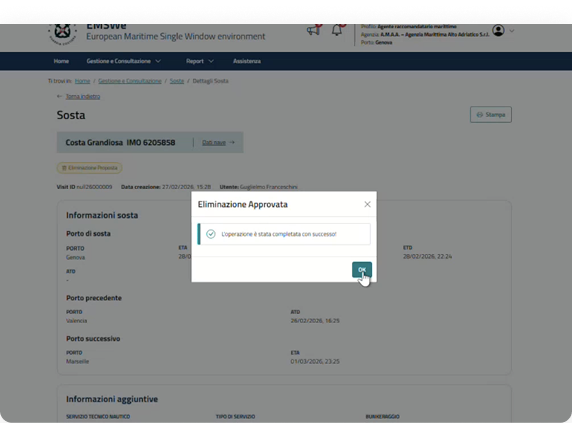
Sosta eliminata
La sosta eliminata non comparirà più all'interno dei risultati di ricerca nella lista soste.
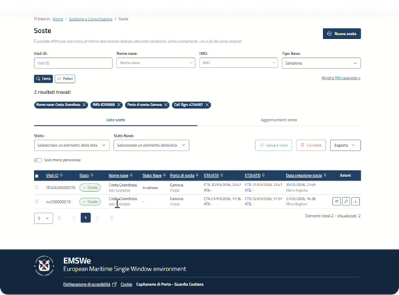
In caso di rifiuto della proposta di eliminazione, la sosta assumerà nuovamente lo stato creata e continuerà ad essere visibile.